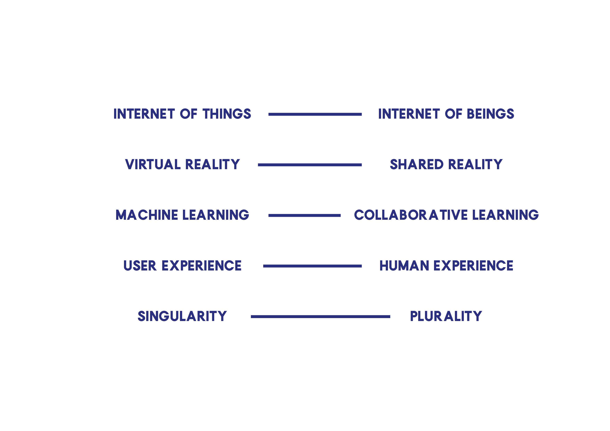

8. Extended Intelligences.
This image was generated with machine learning in vqgan from replicate website. Dive in if you want to learn more about this crazy generation of images by computers.
Read More
January 1, 2022
We started this class by asking ourselves how do we define the word 'Future'. I honestly only thought about the future as an upcoming present made by variants of de choices we make today and how we use the resources we have at hand to work towards a desired future. I also believe it is a collaborative effort and the result of our collective actions which generate different alternatives and depends on our ability to adapt. Andres Colmenares is the Co-founder of I AM this research studio lab uses futures as tools to help create opportunities and face upcoming challenges. This while also exploring socio-ecological impacts of the new digital technologies.
Andrés stated that the Future does not exist, it must be refered to as futures. These Futures are always in plural, they are tools which help us shape things and they are futures to be invented. In these way, the futures depend on us and what we do with our present. This refers to a sense of advocacy and power in decision making. It is a fact that we live in a society which influences our ways of thinking and acting. As Capitalism influencing our consciousness. This conscioussness is disrupted and drives us towards certain actions that are usually individual. Progress will only come when worked towards a collective wellbeing interest. This is hard in actual times due to a polarization of society. We are in need of applying critical long term thinking.
One thing I found really interesting is how we change words to change the world.
I resonated a lot with the concept of climate change being substituted for system change. We as humans are part of an integrated system in which every action affects the result. There are lots of things that are not working any more or are just benefitting a few, we can find ways to correct this and repair the damage that is already caused. By asking hipothetical questions, we start thinking about alternative ways and questioning how things could improve. Design can move towards designing for responsibility, empathy & tolerance, plurality and solidarity. This made me think about the impact we have in our ecosystem and the responsability attached to the actions we take part on. While travelling somewhere we become part of a system that is directly corelated to the ecosystem we visit. In a good or a bad way. If we are more aware of this we can decide to make our actions beneficial to that natural habitat. Also by working in a collaborative way, joining efforts to improve the ways we interact with our environment.
This course made me more aware about the concepts we have already defined in our minds which are not necesarily that defined. Once we think about the implications of some concepts in our new present we realize they adapt to the new realities we are living.
In this way concepts are not necesarilly 100% defined, but we give them meaning regarding the situation and context we are living. Something I enjoyed a lot from this course was the activities we had which helped us speculate about futures. This collective criteria helped us shaped what we think would happen in a near future. For this we needed reference of what is going on in this present and where we think we're heading towards. Surprisingly most of our group agree that we are heading towards the same path. I stay with this awareness and open criteria on how we see things in our reality.
This image was generated with machine learning in vqgan from replicate website. Dive in if you want to learn more about this crazy generation of images by computers.
Read MoreExploring new ways and materials that can shape our future designs..
Read MoreAnalizing existing situations in order to become agents of change.
Read More